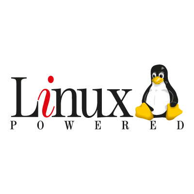
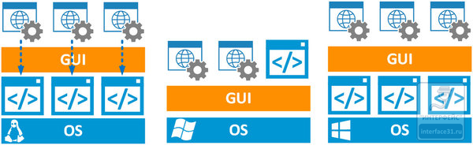

Заглянуть глубже |
|
 |
|
Данный материал основан на статье, ссылку на которую возможно найти в разделе "Полезные ссылки"
Сразу о том, что нужно раз и навсегда забыть. Это «религиозные войны» и «религиозный фанатизм». Одинаково плохо отрицать возможности Linuх-систем, как и превозносить их, стремясь перевести на Linux все что нужно и не нужно. Запомните — операционная система — это инструмент, хороший специалист берет для каждой задачи наиболее подходящий, фанатик будет забивать гвозди микроскопом, потому что взять в руки молоток ему «религия не позволяет».
Для привыкшего к графическим инструментам Windows-администратора это может показаться сложным. Но следует твердо усвоить одну истину —
консоль является единственным полноценным инструментом администрирования Linux и совсем не означает ограниченность в возможностях или
неполноценность системы. Даже наоборот, командная строка позволяет выполнить многие задачи намного быстрее и проще, чем графические инструменты
администрирования.
Но существуют же графические инструменты администрирования, скажет иной читатель, панели там разные, или можно же поставить графическую оболочку.
Можно, но не нужно. Почему? Внимательно посмотрите на схему ниже:

Linux, создававшийся по образу и подобию UNIX-систем, является полноценной системой и без графической оболочки, более того мы можем запустить,
закрыть или вообще сменить графическую оболочку без какого-либо влияния на работоспособность системы и даже без ее перезагрузки. Завершили сеанс Gnome,
запустили KDE, а потом и вовсе вышли в консоль. Поэтому все инструменты управления системой разработаны для использования в режиме командной
строки. А все панели и графические инструменты являются всего лишь надстройкой над ними.
Windows долгое время разрабатывался по принципиально иной технологии, графическая оболочка была поставлена в основу системы и долгое время даже
выполнялась на уровне ядра (семейство Win 9x). Поэтому все инструменты администрирования были изначально графическими, а инструменты командной строки
скорее их дополняли, чем заменяли. Любой, кто занимался восстановлением Windows, знает, что возможности инструментов командной строки там существенно ограничены
и предназначены в первую очередь для восстановления системы, а не для ее администрирования.
Ситуация стала меняться с выходом PowerShell и Core-версий Windows Server. Несмотря на то, что сегодня графическая оболочка продолжает играть существенную
роль в Windows-системах, администраторы получили в руки альтернативный инструмент — консоль PowerShell, которая позволяет полноценно
администрировать Windows в режиме командной строки. При этом возможности PowerShell сразу завоевали популярность в среде специалистов, так как позволяют
выполнять многие задачи быстрее и проще, чем графические инструменты.
А еще режим командной строки дает неограниченные возможности в создании собственных скриптов и сценариев, позволяющих выполнять сложные
последовательности действий в автоматическом режиме или по расписанию.
После этого, как нам кажется, вы должны будете посмотреть на консоль Linux совсем с другой стороны. Что касается панелей и графических инструментов,
то тут есть существенные отличия от Windows-систем. В Windows графические инструменты являются полноценной альтернативой PowerShell. В Linux
графические инструменты являются надстройкой над консолью, по факту используя те-же самые инструменты, но через дополнительную прослойку. Поэтому
мы категорически не рекомендуем использовать разного рода панели и иные графические инструменты, по крайней мере до тех пор, пока
вы не освоите консоль. После этого вы уже сможете самостоятельно решить, нужна ли вам панель или вы способны сделать все проще и быстрее
через консоль.
Увлечение панелями на раннем этапе знакомства с системой приводит к тому, что навыки администрирования системы будут подменены навыками
работы с панелью, что черевато проблемами, когда панель по какой-либо причине окажется недоступной, а работать с системой надо. Это можно
сравнить с тем, что человек учившийся вождению автомобиля с механической коробкой без проблем пересядет на автомат, а человек изначально умеющий
ездить только на автомате вряд-ли сможет без дополнительного обучения поехать на машине с механикой.
Основу любой операционной системы составляет ядро. Существует несколько различных архитектур ядра, Linux, как и подавляющее большинство
UNIX систем, использует монолитное ядро, Windows наоборот использует концепцию микроядра, хотя по-настоящему архитектура Windows микроядерной не является,
принято считать, что Windows использует гибридное ядро.
Особенностью монолитного ядра является то, что все драйвера оборудования также являются частью ядра. Ранее, при изменении аппаратной части, ядро надо было
пересобирать, сегодня монолитные ядра используют модульную схему, т.е. динамически позволяют загружать необходимые модули, отвечающие за тот или иной
функционал. Т.е. добавив в систему новое устройство, мы должны динамически загрузить соответствующий модуль ядра, а если такого модуля нет,
то работа с устройством окажется невозможной. В качестве решения мы можем собрать модуль самостоятельно, но при этом модуль будет
скомпилирован под текущую версию ядра и при его смене модуль нужно будет перекомпилировать.
В микроядерной и гибридной архитектурах, драйвера, хоть могут и работать на уровне ядра, его частью не являются и от версии ядра
не зависят. Поэтому мы можем без проблем обновлять ядро или использовать один и тот-же драйвер для всех версий систем с общей структурой ядра.
Например, в Windows для всего семейства современных ОС, от Windows Vista до Windows 8.1, часто используется один и тот-же драйвер.
Это не значит, что Linux в этом плане хуже, иная архитектура предусматривает иные подходы. Практически это означает только одно — к выбору
оборудования для серверов надо относиться более внимательно, стараясь чтобы все основные устройства поддерживались ядром вашего дистрибутива. Особенно это касается
сетевых карт. Будет очень неприятно, если после каждого обновления ядра вам придется бегать в серверную, подключать к серверу монитор и клавиатуру
и заново собирать модуль ядра.
По сути, такого понятия как драйвер, в Linux системах не существует. Оборудование либо поддерживается ядром, либо нет. Несомненный плюс монолитного
ядра — оно самодостаточно. Если все оборудование поддерживается — поставил и забыл, самое время вспомнить ситуацию, когда под Windows нет
драйвера сетевой карты и диск утерян.
| Сравнение ОС | |
| Linux | Windows |
| Open Source | Closed Source |
| Free | Paid |